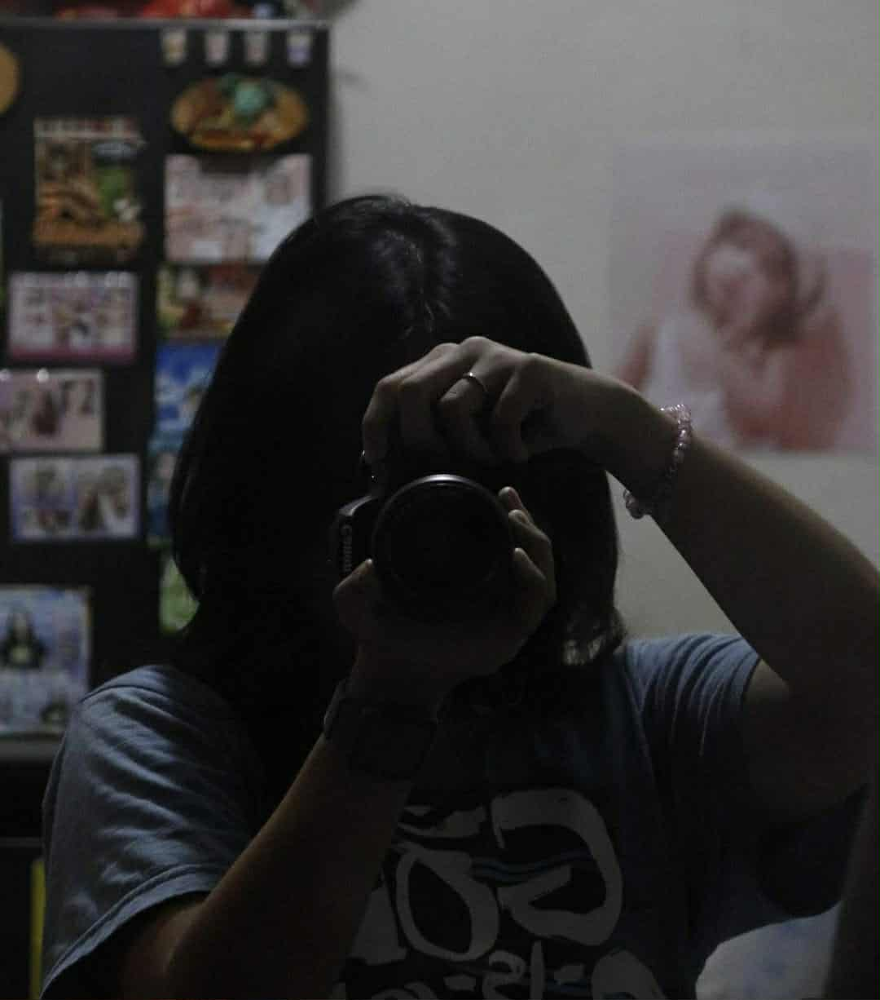

About Me
The story behind the lens.

Hi, I’m Alexa — a student from Holy Angel University studying Information Technology. I’m a web developer and a passionate photographer who loves capturing raw emotions and everyday stories through my lens.
Through my lens, I’ve found a voice for creativity and reflection. My goal is to inspire others to see beauty in the simple things — the play of light, the passing moments, and the genuine smiles that make life meaningful.